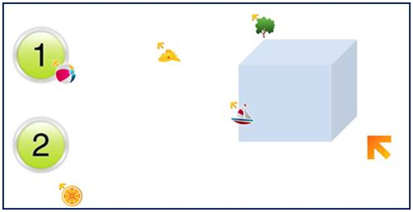

Рекомендации по созданию интерактивного урока с Mouse Mischief
Принцип работы приема Mouse Mischief.
 После установки MS Mouse Mischief на компьютер в интерфейсе программы MS PowerPoint появляется новая вкладка «Несколько мышей» Технология Mouse Mischief используется для создания тестовых заданий. Для этого предусмотрено три режима тестирования: «Да - Нет», «Несколько вариантов» и «Рисунок от руки». В процессе разработки теста учитель имеет возможность обозначить правильный ответ среди других вариантов, для этого достаточно выбрать правильный вариант из выпадающего списка «Назначить ответ». После запуска на демонстрацию презентации появляется диалоговый экран для определения мыши учителя и участников интерактива (при этом «детские» мыши выглядят различных картинок - объектов, которые также добавляют позитива к работе).
Ученики могут в группах, парах или индивидуально выполнять задания теста. После последнего ответа на каждом слайде выводится экран – статистика, в котором отображается количество правильных и неправильно выбранных вариантов ответов, а также указывается, кто дал первым правильный вариант ответа. Следует отметить, что при использовании этого приема одновременно работает только одна мышь, то есть задачи выполняются поочередно.